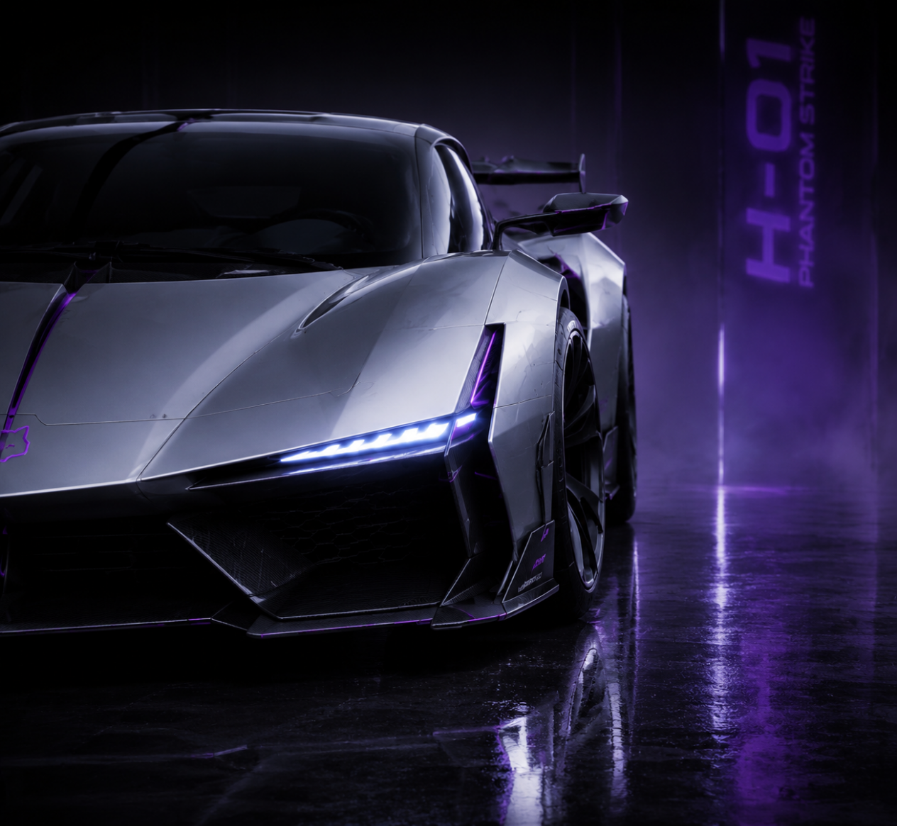

GT 轿跑
NEKO GT
Grand Tourer of Elegance
为「流动感」而生的电动GT轿跑。不追求极致速度的张扬，而是致力于在高速驰骋中展现从容气度。
680kW功率
2.3s0-100
700km续航

JDM 性能
RZ-01 Shadow Cat
Pure JDM Driving Machine
回归驾驶本质的JDM性能座驾。没有多余的修饰，没有妥协的设计，没有冗余的科技包装。它存在的意义只有一个：为驾驶而生。
380HP功率
FR驱动
1250kg整备

双人格 SUV
UR-01 Urban Raider
Dual Personality Performance SUV
外表沉稳克制、内在强劲有力的双人格SUV。既可以是家庭日常通勤的得力助手，也能化身为释放激情的性能猛兽。
600HP功率
3.5s0-100
AWD驱动

Hypercar
H-01 Phantom Strike
Hypercar of Silence and Power
TurboNeko的终极之作，一款游走于现实边界的超跑。它并非为日常使用而设计，而是用来定义品牌的极限。
1550HP功率
2.3s0-100
1380kg整备